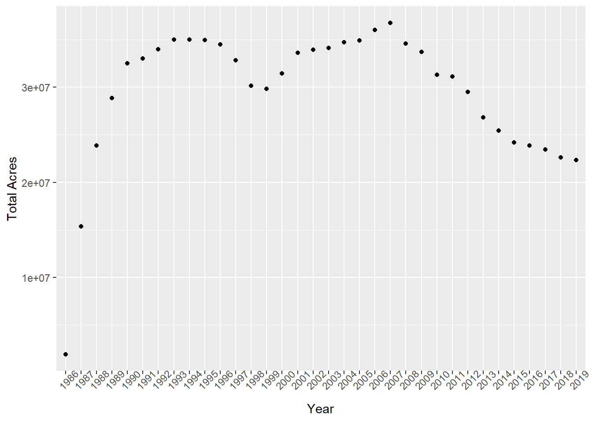

This R Markdown document is part of a series of examples similar to this one. The purpose of the examples is to demonstrate how to solve problems in data science and analytics engineering with various tools, strategies, and techniques.
If you want to learn more about these examples, please checkout the home page.
The purpose of this R Markdown document is to demonstrate how R and Excel can be used to solve problems in data science and analytics engineering.
In this example, R is used to:
If a variable name begins with a . this is simply to avoid conflicting names with R keywords or other variables in the namespace.
This R Markdown document will provide an example of how to access enrollment data for the USDA’s Conservation Reserve Program (CRP).
In this example, I will read an Excel document located on the USDA’s website containing data for CRP Enrollment and Rental Payments by State, 1986-2019.
Let’s start by loading the necessary packages
library("openxlsx")
library("data.table")
library("ggplot2")
suppressMessages(library("here"))Read data
usda_url <- "https://www.fsa.usda.gov/Assets/USDA-FSA-Public/usdafiles/Conservation/Excel/HistoryState86-19.xlsx"
DT <- read.xlsx(usda_url, sheet = "ACRES", startRow = 4)
setDT(DT)View the top 6 rows of the table.
head(DT)## STATE 1986 1987 1988 1989 1990 1991
## 1: ALABAMA 68508.7 301781.0 411872.3 483683.5 501939.1 518101.2
## 2: ALASKA 2312.0 16589.2 25070.0 25282.1 25282.1 26129.6
## 3: ARIZONA 0.0 0.0 32.8 32.8 32.8 32.8
## 4: ARKANSAS 19999.2 91611.6 140646.8 184557.1 212325.9 221652.9
## 5: CALIFORNIA 21953.4 119699.9 151569.3 169460.9 176164.8 176164.8
## 6: COLORADO 354707.6 1286526.4 1599842.6 1751619.0 1908530.0 1910089.3
## 1992 1993 1994 1995 1996 1997 1998
## 1: 533145.3 555523.1 555523.1 554378.3 543859.0 522200.0 426110.8
## 2: 26129.6 26129.6 26129.6 24929.7 24908.2 24673.8 25182.5
## 3: 32.8 32.8 32.8 32.8 32.8 32.8 32.8
## 4: 232969.0 246474.3 246474.3 245819.1 239120.4 230370.5 180809.1
## 5: 181807.8 182185.0 182185.0 180520.0 178967.4 172966.3 133052.1
## 6: 1924274.5 1933910.1 1933910.1 1933203.0 1917138.9 1890058.1 1798544.0
## 1999 2000 2001 2002 2003 2004 2005
## 1: 410310.0 455772.1 480149.9 483654.4 483514.0 484247.7 485106.2
## 2: 24970.4 29983.9 29471.1 29476.1 29511.1 29522.2 29803.8
## 3: 32.8 32.8 32.8 32.8 32.8 32.8 32.8
## 4: 148449.8 145245.1 157270.2 161363.3 171183.2 190185.4 202528.3
## 5: 129000.2 130130.1 137241.4 138997.2 142860.5 146954.2 144438.4
## 6: 1942880.7 2093465.0 2204833.7 2209394.8 2203548.8 2275856.7 2284796.5
## 2006 2007 2008 2009 2010 2011 2012
## 1: 491584.4 492544.9 463696.6 445837.7 417483.5 396597.2 360284.7
## 2: 29748.2 29745.7 26463.1 26463.1 25799.6 19013.4 18982.5
## 3: 0.0 0.0 0.0 0.0 0.0 0.0 0.0
## 4: 220275.3 237860.7 233807.6 246977.1 248619.2 249421.2 251166.4
## 5: 147364.3 148899.4 132547.0 128097.0 125668.0 121757.4 101227.5
## 6: 2372838.4 2472094.2 2437937.1 2419613.0 2022102.3 2238974.3 2175942.0
## 2013 2014 2015 2016 2017 2018 2019
## 1: 324751.5 307772.2 278099.2 255214.37 241959.66 212730.90 200036.22
## 2: 17992.4 17977.0 17518.3 17423.50 17423.50 2704.30 2704.47
## 3: 0.0 0.0 0.0 0.00 0.00 0.00 0.00
## 4: 239593.4 236057.5 234038.8 231505.79 230271.71 230624.50 219861.78
## 5: 87660.0 83113.7 81456.2 79611.04 74336.77 42788.19 42735.31
## 6: 2067070.1 1988096.2 1912358.4 1853457.21 1779117.03 1813765.63 1838914.49Un-pivot the data in order to make it easier to work with.
DT <- data.table::melt(DT, id.vars = "STATE", variable.name = "YEAR", value.name = "ACRES")View the top 3 rows of the table.
head(DT, 3)## STATE YEAR ACRES
## 1: ALABAMA 1986 68508.7
## 2: ALASKA 1986 2312.0
## 3: ARIZONA 1986 0.0View the bottom 3 rows of the table.
tail(DT, 3)## STATE YEAR
## 1: WYOMING 2019
## 2: U.S. 2019
## 3: 1/ Fiscal years end September 30th. Not including Virginia cities. 2019
## ACRES
## 1: 206581
## 2: 22324912
## 3: NALooks like we grabbed a blank row (where STATE = “1/ Fiscal years end September 30th…”). We also grabbed the US total (where STATE = “U.S.”).
unique(DT$STATE)## [1] "ALABAMA"
## [2] "ALASKA"
## [3] "ARIZONA"
## [4] "ARKANSAS"
## [5] "CALIFORNIA"
## [6] "COLORADO"
## [7] "CONNECTICUT"
## [8] "DELAWARE"
## [9] "FLORIDA"
## [10] "GEORGIA"
## [11] "HAWAII"
## [12] "IDAHO"
## [13] "ILLINOIS"
## [14] "INDIANA"
## [15] "IOWA"
## [16] "KANSAS"
## [17] "KENTUCKY"
## [18] "LOUISIANA"
## [19] "MAINE"
## [20] "MARYLAND"
## [21] "MASSACHUSETTS"
## [22] "MICHIGAN"
## [23] "MINNESOTA"
## [24] "MISSISSIPPI"
## [25] "MISSOURI"
## [26] "MONTANA"
## [27] "NEBRASKA"
## [28] "NEVADA"
## [29] "NEW HAMPSHIRE"
## [30] "NEW JERSEY"
## [31] "NEW MEXICO"
## [32] "NEW YORK"
## [33] "NORTH CAROLINA"
## [34] "NORTH DAKOTA"
## [35] "OHIO"
## [36] "OKLAHOMA"
## [37] "OREGON"
## [38] "PENNSYLVANIA"
## [39] "PUERTO RICO"
## [40] "RHODE ISLAND"
## [41] "SOUTH CAROLINA"
## [42] "SOUTH DAKOTA"
## [43] "TENNESSEE"
## [44] "TEXAS"
## [45] "UTAH"
## [46] "VERMONT"
## [47] "VIRGINIA"
## [48] "WASHINGTON"
## [49] "WEST VIRGINIA"
## [50] "WISCONSIN"
## [51] "WYOMING"
## [52] "U.S."
## [53] "1/ Fiscal years end September 30th. Not including Virginia cities."Let’s filter the entire table by selecting only rows containing the name of an actual state.
state_names <- toupper(state.name)
DT <- DT[STATE %in% state_names]
unique(DT$STATE)## [1] "ALABAMA" "ALASKA" "ARIZONA" "ARKANSAS"
## [5] "CALIFORNIA" "COLORADO" "CONNECTICUT" "DELAWARE"
## [9] "FLORIDA" "GEORGIA" "HAWAII" "IDAHO"
## [13] "ILLINOIS" "INDIANA" "IOWA" "KANSAS"
## [17] "KENTUCKY" "LOUISIANA" "MAINE" "MARYLAND"
## [21] "MASSACHUSETTS" "MICHIGAN" "MINNESOTA" "MISSISSIPPI"
## [25] "MISSOURI" "MONTANA" "NEBRASKA" "NEVADA"
## [29] "NEW HAMPSHIRE" "NEW JERSEY" "NEW MEXICO" "NEW YORK"
## [33] "NORTH CAROLINA" "NORTH DAKOTA" "OHIO" "OKLAHOMA"
## [37] "OREGON" "PENNSYLVANIA" "RHODE ISLAND" "SOUTH CAROLINA"
## [41] "SOUTH DAKOTA" "TENNESSEE" "TEXAS" "UTAH"
## [45] "VERMONT" "VIRGINIA" "WASHINGTON" "WEST VIRGINIA"
## [49] "WISCONSIN" "WYOMING"Format column names so they’re all lowercase to make it easier to work with.
old_names <- names(DT)
new_names <- tolower(old_names)
setnames(DT, old_names, new_names)Let’s aggregate the data in order to plot the annual US total.
dt <- DT[, .(total_acres = sum(acres), avg_acres = mean(acres)), by = .(year)]
ggplot(dt, aes(x = as.character(year), y = total_acres)) +
geom_point() +
theme(axis.text.x = element_text(angle = 45)) +
labs(y = "Total Acres", x = "Year")
You can view all of the data in this paged table.
rmarkdown::paged_table(dt, options = list(rows.print = 10))Save the results to a CSV file.
csv_fname <- here("Data", "usda_crp_enrollment.csv")
fwrite(DT, csv_fname)And that’s it! I hope this was helpful. Please feel free to reach out with any questions or concerns.